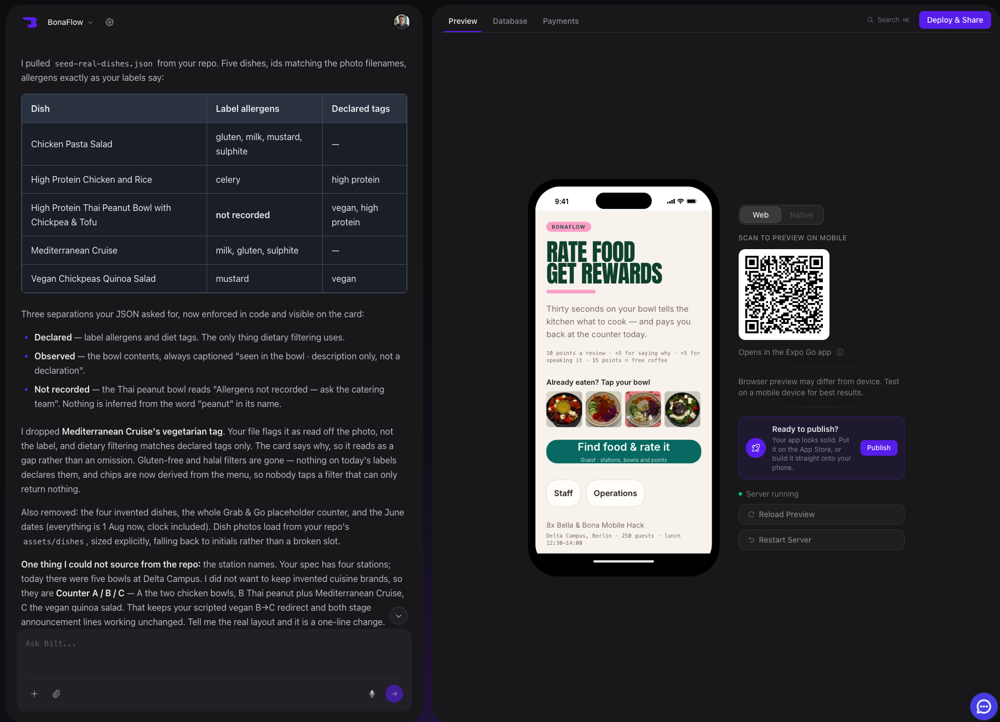

RAPID PROTOTYPE

Prototype quickly
Beginner-friendly, integrated and impressively mobile from the first iteration.
- Natural-language building
- Integrated backend workflow
- Native-quality experience
- Guided QR sharing & publishing
Trade-off: preview users still need Expo Go.